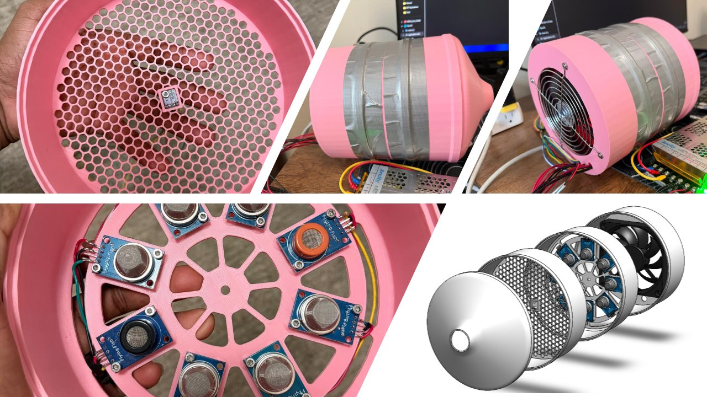
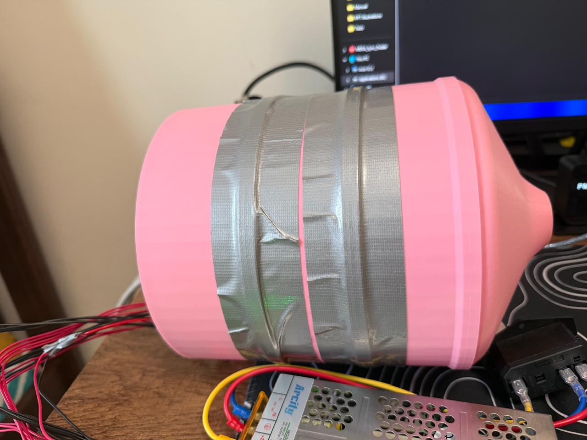
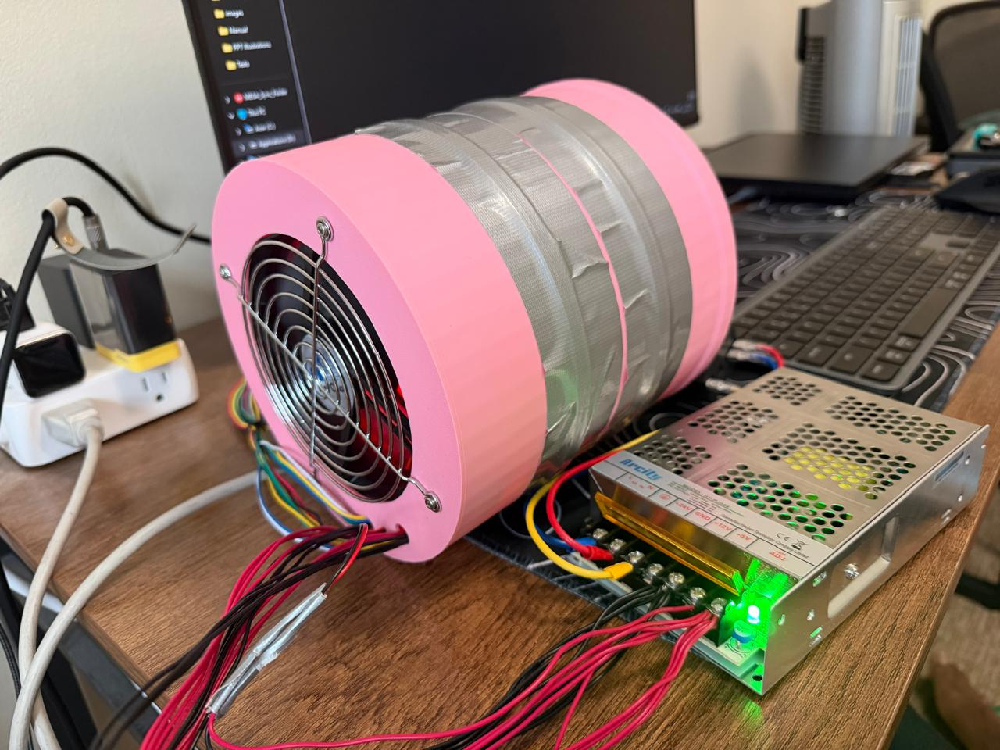
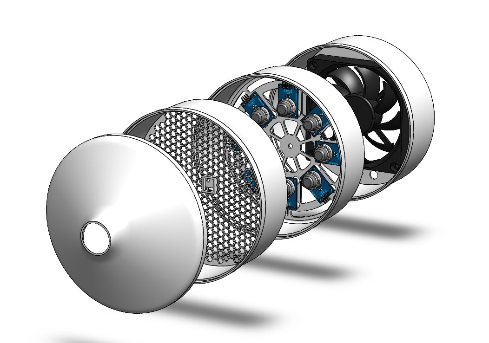
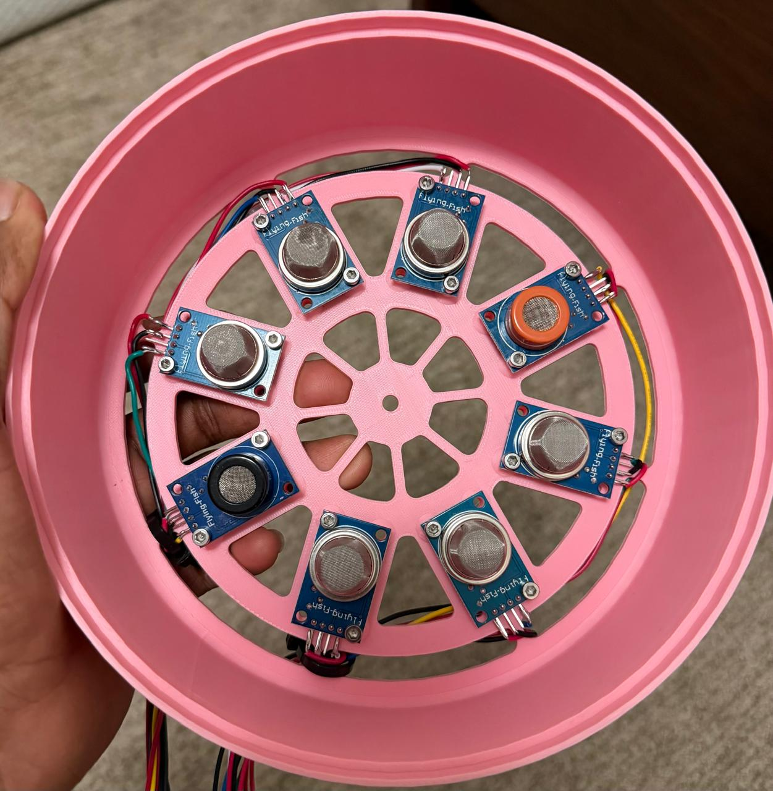
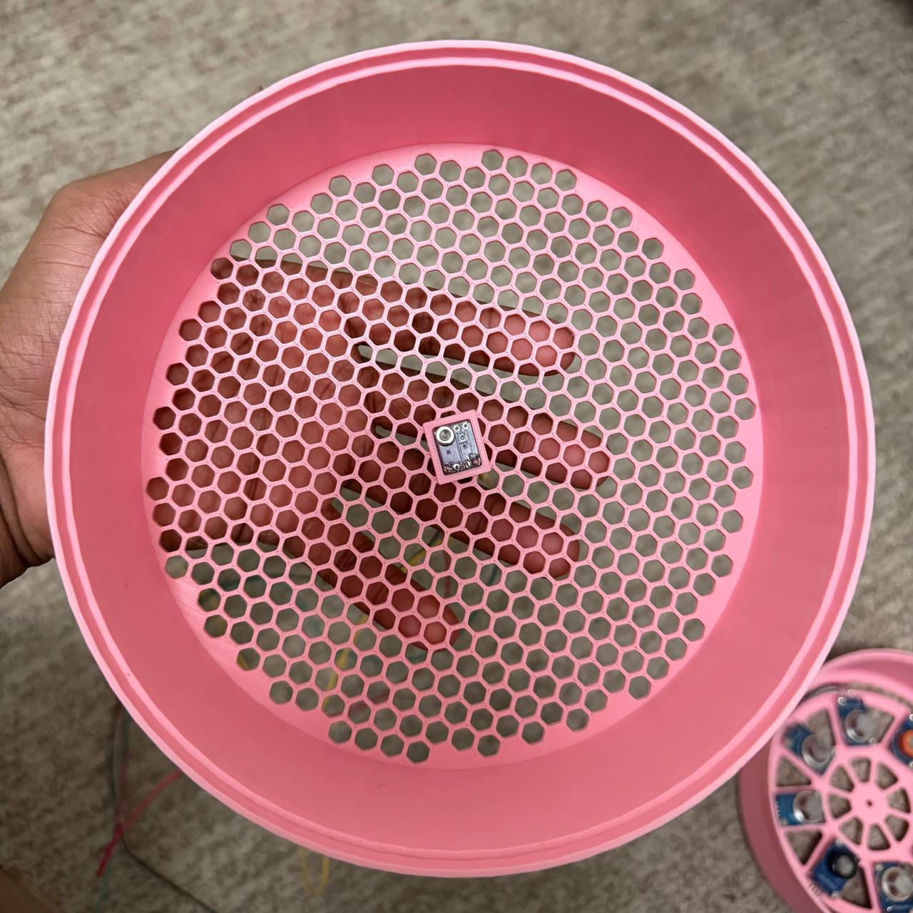
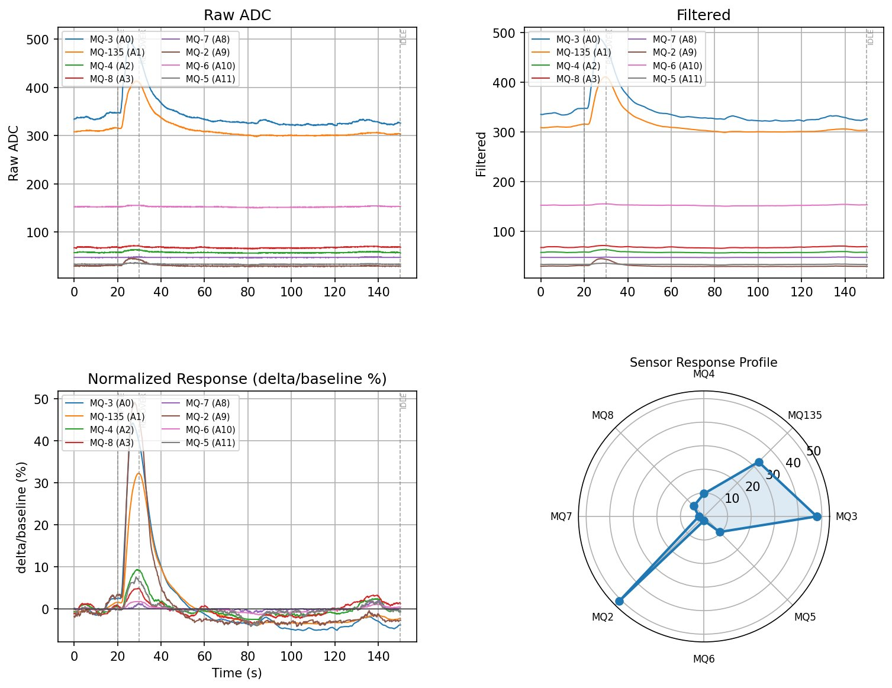

Project
Electronic Nose — VOC Detection & Classification System
A fully custom electronic nose (e-nose) built from the ground up: 8-sensor MQ-series array in a 3D-printed flow-controlled housing, Arduino Mega firmware for multi-channel ADC acquisition and data logging, and a Python signal processing pipeline for drift compensation, SNR-ranked feature extraction, and multi-class VOC classification.

Overview
Electronic noses mimic biological olfaction by using an array of partially overlapping gas sensors to produce a unique "fingerprint" response for different volatile compounds. This project covers the full stack: mechanical enclosure design, embedded firmware, analog signal conditioning, and a machine learning classification pipeline — all built and validated from scratch.
The housing uses a fan-driven forced-airflow design to ensure consistent sample delivery to all 8 sensors simultaneously. A honeycomb inlet diffuser on the front face and a 120mm exhaust fan on the rear create a controlled laminar flow across the sensor wheel, minimizing measurement variance between samples.
Hardware & Enclosure
The enclosure was designed in SolidWorks and 3D-printed in PLA. Four modular sections bolt together: a honeycomb inlet cap, a temperature/humidity sensor housing, the main sensor wheel (holding all 8 MQ sensors in a radial pattern), and a rear fan mount. The sensor wheel uses a spoke-and-rim design to expose all sensors to the airflow path equally.





Sensor Array
8 MQ-series gas sensors are mounted in a radial arrangement on a 3D-printed spoke wheel, each targeting a different class of volatile compounds. The cross-sensitivity between sensors is intentional — overlapping responses produce a richer discriminative fingerprint than single-analyte sensors.
| Sensor | Primary Target | ADC Channel |
|---|---|---|
| MQ-3 | Alcohol / ethanol vapors | A0 |
| MQ-135 | Air quality / NH₃, CO₂, benzene | A1 |
| MQ-4 | Methane / natural gas | A2 |
| MQ-8 | Hydrogen gas | A3 |
| MQ-7 | Carbon monoxide | A8 |
| MQ-2 | Smoke / LPG / propane | A9 |
| MQ-6 | LPG / butane / propane | A10 |
| MQ-5 | Natural gas / LPG | A11 |
Firmware — Arduino Mega ADC Acquisition
- Multi-channel ADC sampling: All 8 sensor channels polled at configurable 1–10 Hz rates via Arduino Mega ADC (12 analog inputs) with hardware averaging to reduce quantization noise.
- Ring-buffer data logging: Sensor readings stored in a circular buffer in SRAM and flushed to serial/SD in timestamped CSV batches for offline analysis.
- Warm-up sequencing: Firmware implements a timed warm-up phase (MQ sensors require 24–48 hours for first stabilization, 60 s per session) before any acquisition begins, with LED status indication.
- Baseline capture: Clean-air baseline snapshot taken at session start; delta responses computed relative to this baseline throughout the measurement window.
- Fan PWM control: 120mm exhaust fan driven via PWM output to maintain consistent airflow rate across all measurements.
Signal Processing & Data Pipeline
- Raw ADC → filtered: Per-channel moving-average filter applied to raw ADC values to remove high-frequency noise while preserving response transients.
- Normalized response: Each channel's response expressed as Δ/baseline (%) to eliminate inter-sensor gain differences and session-to-session baseline drift.
- Drift compensation: Exponential baseline tracking applied over long sessions to compensate for MQ sensor thermal drift and aging effects.
- SNR-ranked feature selection: Per-channel SNR computed across a labeled dataset; sensors ranked by discriminative power. Lowest-SNR sensors pruned from the feature vector to reduce classifier complexity without accuracy loss.
- Radar response profile: Peak normalized response per sensor plotted on a radar chart to visualize the unique "scent fingerprint" of each VOC sample.

Raw ADC (top left), filtered signal (top right), normalized Δ/baseline response (bottom left), and radar response profile (bottom right) for a perfume VOC sample. MQ-135 and MQ-3 show the strongest response at ~32% and ~24% respectively.
Tech Stack
Embedded Firmware
Arduino Mega (ATmega2560) C/C++; 8-channel ADC acquisition; ring-buffer logging; fan PWM; warm-up sequencing; serial CSV output.
Mechanical Design
SolidWorks enclosure: honeycomb inlet diffuser, radial sensor wheel, modular bolt-together sections, 120mm fan mount.
Signal Processing
Python: moving-average filter, baseline capture, Δ/baseline normalization, exponential drift compensation, SNR ranking.
Visualization
Matplotlib time-series plots (raw, filtered, normalized), radar response profiles, per-sensor SNR bar charts.